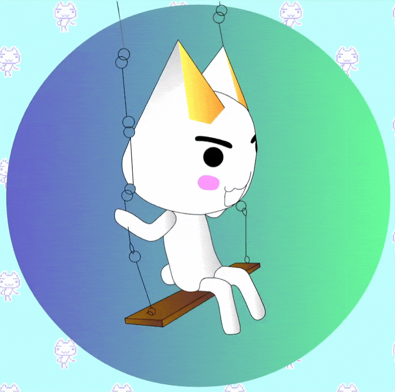

 Welcome to Toro Cat Club! This is an old Toro Inoue fan site made by Stephanie Yeh that has been restored and translated to English by pumpkinhasapatch for your convenience. Please click the Toro button in the lower right corner to access the website. ^_^ Thank you!